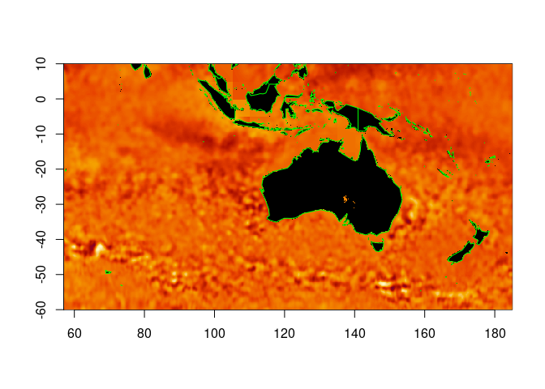
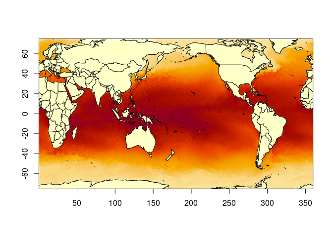
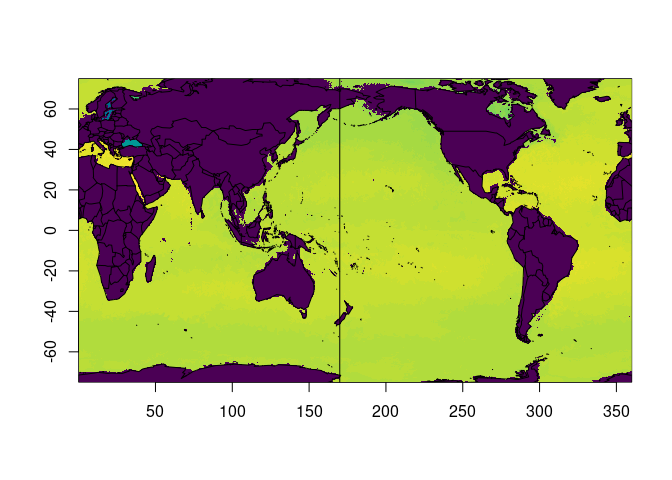
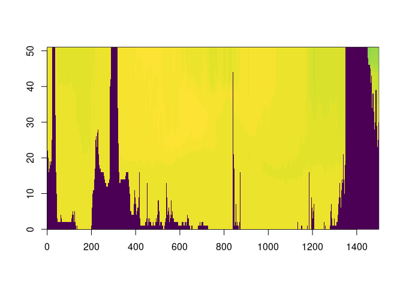

Arrow Zarr in R. A low-level Zarr reader for R built on Arrow’s filesystem and codec infrastructure. Supports V2 and V3 stores with automatic version detection and consolidated metadata.
Documentation and articles: https://hypertidy.github.io/zaro/ (getting started, virtual stores, planning, fetching and sharding, zaro as an ndr engine).
Status
Experimental but functional. Reads real-world cloud Zarr stores end-to-end including AODN (Australian Ocean Data Network) datasets on S3.
Install
install.packages("zaro", repos = c("https://hypertidy.r-universe.dev",
"https://cloud.r-project.org"))Quick start
library(zaro)
# open an AODN sea level dataset (Zarr V2 on S3)
store <- zaro("s3://aodn-cloud-optimised/model_sea_level_anomaly_gridded_realtime.zarr",
anonymous = TRUE, region = "ap-southeast-2")
# consolidated metadata in one request
meta <- zaro_meta(store)
#> [zaro] found .zmetadata (Zarr V2 consolidated)
#> [zaro] 9 arrays: GSL, GSLA, LATITUDE, LONGITUDE, TIME, UCUR, VCUR, end_time, start_time
# inspect an array
gsla <- attr(meta, "consolidated")[["GSLA"]]
gsla@shape # [1] 100 351 641
gsla@data_type # "float64"
gsla@dimension_names # "TIME" "LATITUDE" "LONGITUDE"
# read a slab (0-based indexing)
data <- zaro_read(store, "GSLA",
start = c(0, 0, 0), count = c(1, 351, 641),
meta = gsla)
#> [zaro] reading 1 chunk(s) for path 'GSLA' (V2)
dim(data) # [1] 5 351 641
range(data, na.rm = TRUE)Design
Three internal layers, one flat API.
Store - key-value access to Zarr stores. Arrow FileSystem handles local, S3, and GCS natively. gdalraster VSI handles HTTP and provides automatic S3 region detection when Arrow returns a 301 redirect. Kerchunk JSON and Parquet reference stores provide virtual Zarr access to existing archival files (NetCDF, HDF5, GRIB, TIFF).
Metadata - pure R/jsonlite parsing with automatic V2/V3 detection. Consolidated metadata is preferred for cloud stores: .zmetadata (V2) or consolidated zarr.json (V3), retrieving all array metadata in a single request. Handles numpy dtype strings, xarray’s _ARRAY_DIMENSIONS convention, and JSON-encoded fill values ("NaN", "Infinity").
Codec - decompression pipeline using Arrow C++ codecs (zstd, gzip, lz4, brotli, snappy, bz2) with optional blosc fallback for V2 stores. V2 compressor + filters are normalised to the V3 codec chain model so the decode pipeline is uniform. Type coercion handles endianness and dtype mapping to R vectors via readBin().
API
The core functions:
store <- zaro(source, ...) # open a store
zaro_list(store) # list contents
zaro_meta(store, path) # read metadata
zaro_read(store, path, ...) # read array data
zaro_dataset(store) # every array and its dimensions, no data read
zaro_array(store, path, cf = TRUE) # a lazy R array (via altarr), CF-decodedOpening stores
# S3 (anonymous)
store <- zaro("s3://bucket/dataset.zarr", anonymous = TRUE)
# S3 (specific region)
store <- zaro("s3://aodn-cloud-optimised/dataset.zarr",
region = "ap-southeast-2", anonymous = TRUE)
# local filesystem
store <- zaro("/data/my_store.zarr")
# HTTP (via gdalraster /vsicurl/)
store <- zaro("https://example.com/data.zarr")
# GCS
store <- zaro("gs://bucket/dataset.zarr")
# Kerchunk virtual references
store <- zaro("reference+json:///path/to/refs.json")
store <- zaro("reference+parquet:///path/to/refs.parquet")Consolidated metadata
For cloud stores, zaro_meta() reads consolidated metadata first - a single HTTP request for the entire store’s metadata rather than one per array.
meta <- zaro_meta(store)
# all arrays available without additional requests:
names(attr(meta, "consolidated"))
# root group attributes (CF conventions etc):
meta@attributes
# read metadata for a specific array (also uses consolidated cache):
temp_meta <- zaro_meta(store, "temperature")
temp_meta@shape
temp_meta@data_type
temp_meta@dimension_names
temp_meta@codecsReading data
# read a hyperslab (0-based start, element counts)
data <- zaro_read(store, "temperature",
start = c(0, 100, 200),
count = c(10, 50, 50))
# read full extent (omit start/count)
lat <- zaro_read(store, "LATITUDE")
# pass pre-fetched metadata to skip redundant request
data <- zaro_read(store, "GSLA", meta = gsla,
start = c(0, 0, 0), count = c(5, 351, 641))Examples
Two zarr examples
Material Zarr
library(zaro)
store <- zaro("s3://aodn-cloud-optimised/model_sea_level_anomaly_gridded_realtime.zarr",
anonymous = TRUE, region = "ap-southeast-2")
#> [zaro] opening S3 store via Arrow: s3://aodn-cloud-optimised/model_sea_level_anomaly_gridded_realtime.zarr
# consolidated metadata in one request
meta <- zaro_meta(store)
#> [zaro] found .zmetadata (Zarr V2 consolidated)
#> [zaro] 9 arrays: GSL, GSLA, LATITUDE, LONGITUDE, TIME, UCUR, VCUR, end_time, start_time
gsla <- attr(meta, "consolidated")[["GSLA"]]
gsla@shape # [1] 100 351 641
#> [1] 100 351 641
gsla@data_type # "float64"
#> [1] "float64"
gsla@dimension_names # "TIME" "LATITUDE" "LONGITUDE"
#> [1] "TIME" "LATITUDE" "LONGITUDE"
# read a slab (0-based indexing)
data <- zaro_read(store, "GSLA",
start = c(0, 0, 0), count = c(1, NA, NA),
meta = gsla) ## or meta = meta
#> [zaro] reading 1 chunk(s) for path 'GSLA' (V2)
lon <- zaro_read(store, "LONGITUDE", meta = meta)
#> [zaro] reading 1 chunk(s) for path 'LONGITUDE' (V2)
lat <- zaro_read(store, "LATITUDE", meta = meta)
#> [zaro] reading 1 chunk(s) for path 'LATITUDE' (V2)
ximage::ximage(data[1,ncol(data):1,], c(range(lon), range(lat)))
maps::map(col = "green", add = T)
Virtual Zarr
store <- zaro("virtualizarr://https://raw.githubusercontent.com/mdsumner/virtualized/refs/heads/main/remote/ocean_temp_2023.parq")
#> [zaro] opening VirtualiZarr Parquet reference store: https://raw.githubusercontent.com/mdsumner/virtualized/refs/heads/main/remote/ocean_temp_2023.parq
meta <- zaro_meta(store)
#> [zaro] found .zmetadata (Zarr V2 consolidated)
#> [zaro] 11 arrays: Time, Time_bnds, average_DT, average_T1, average_T2, nv, st_edges_ocean, st_ocean, temp, xt_ocean, yt_ocean
str(zaro:::store_get(store, "temp/0.0.0.0"))
#> raw [1:74186] 78 01 ec bc ...
data <- zaro_read(store, "temp", start = c(0, 0, 0, 0), count = c(1, 1, NA, NA), meta = meta)
#> [zaro] reading 60 chunk(s) for path 'temp' (V2)
dim(data)
#> Time st_ocean yt_ocean xt_ocean
#> 1 1 1500 3600
lon <- zaro_read(store, "xt_ocean", meta = meta)
#> [zaro] reading 1 chunk(s) for path 'xt_ocean' (V2)
lat <- zaro_read(store, "yt_ocean", meta = meta)
#> [zaro] reading 1 chunk(s) for path 'yt_ocean' (V2)
ximage::ximage(data[1,1,dim(data)[3]:1,], c(range(lon), range(lat)))
maps::map("world2", add = TRUE)
Or another
store <- zaro("virtualizarr://https://raw.githubusercontent.com/mdsumner/virtualized/refs/heads/main/remote/ocean_salt_2023.parq")
#> [zaro] opening VirtualiZarr Parquet reference store: https://raw.githubusercontent.com/mdsumner/virtualized/refs/heads/main/remote/ocean_salt_2023.parq
meta <- zaro_meta(store)
#> [zaro] found .zmetadata (Zarr V2 consolidated)
#> [zaro] 11 arrays: Time, Time_bnds, average_DT, average_T1, average_T2, nv, salt, st_edges_ocean, st_ocean, xt_ocean, yt_ocean
data <- zaro_read(store, "salt", start = c(185, 10, 0, 0), count = c(1, 1, NA, NA), meta = meta)
#> [zaro] reading 60 chunk(s) for path 'salt' (V2)
dim(data)
#> Time st_ocean yt_ocean xt_ocean
#> 1 1 1500 3600
lon <- zaro_read(store, "xt_ocean", meta = meta)
#> [zaro] reading 1 chunk(s) for path 'xt_ocean' (V2)
lat <- zaro_read(store, "yt_ocean", meta = meta)
#> [zaro] reading 1 chunk(s) for path 'yt_ocean' (V2)
ximage::ximage(data[1,1,dim(data)[3]:1,], c(range(lon), range(lat)), col = hcl.colors(64))
maps::map("world2", add = TRUE)
abline(v = lon[1700])
data <- zaro_read(store, "salt", start = c(0, 0, 0, 1700), count = c(1, NA, NA, 1))
#> [zaro] checking .zmetadata for 'salt'
#> [zaro] found 'salt' in consolidated metadata
#> [zaro] dtype: int16 | shape: [5479, 51, 1500, 3600] | chunks: [1, 1, 300, 300]
#> [zaro] codecs: bytes -> shuffle -> zlib
#> [zaro] dimensions: Time, st_ocean, yt_ocean, xt_ocean
#> [zaro] reading 255 chunk(s) for path 'salt' (V2)
ximage::ximage(data[1, ,, 1], col = hcl.colors(64))
Verbose diagnostics
Diagnostic messages are on by default to help with discovery and debugging. They report which store backend was selected, metadata format detected, dtype/shape/chunks/codecs, and chunk counts during reads.
# silence per-call
zaro_meta(store, "GSLA", verbose = FALSE)
# silence globally
suppressMessages(zaro_read(store, "GSLA", start = c(0,0,0), count = c(5,351,641)))S3 region handling
Arrow’s S3FileSystem defaults to us-east-1 and does not follow 301 region redirects. When this happens, zaro falls back to gdalraster’s /vsis3/ which handles region detection transparently. You can also specify the region explicitly:
store <- zaro("s3://aodn-cloud-optimised/dataset.zarr",
region = "ap-southeast-2", anonymous = TRUE)Dependencies
Required: arrow, jsonlite, S7
Optional: gdalraster (HTTP/VSI store access, S3 region fallback), blosc (blosc-compressed chunks common in V2 stores)
Zarr version support
Version detection is automatic. zaro_meta() tries V3 first (zarr.json), then falls back to V2 (.zmetadata consolidated, then per-array .zarray + .zattrs). Essentially all existing cloud Zarr data (AODN, Copernicus, CMIP6, NASA) is V2 - this is fully supported.
V2 specifics handled: numpy dtype strings (<f4, >i2, |u1), dimension_separator (dot and slash), _ARRAY_DIMENSIONS (xarray), C/F memory order, consolidated .zmetadata, fill value coercion from JSON strings.
Relationship to other packages
zarr (CRAN) - native R Zarr V3 implementation with R6 store/codec architecture. zaro could contribute an Arrow-backed store class. Different approach: zarr aims for spec-complete V3, zaro prioritises cloud access and existing V2 data.
pizzarr - pure R Zarr V2 implementation with HTTP store support. Bioimaging origin.
gdalraster - comprehensive GDAL bindings including the Zarr driver and Multidimensional API. This is the backend for ndr. zaro is GDAL-independent for array semantics and the codec pipeline, but uses GDAL VSI for filesystem access when Arrow doesn’t cover the transport (HTTP, cross-region S3).
tidync - metadata-first NetCDF exploration. zaro sits below this as potential backend infrastructure for Zarr sources.
ndr - S7-based xarray-like labeled arrays for R. The gdalraster Multidim backend is the primary driver. zaro is an alternative backend for GDAL-independent Zarr access and direct store-level control.
vapour - lightweight GDAL bindings for raster and vector data. Provides some of the same VSI filesystem access that zaro uses via gdalraster.
altarr (hypertidy/altarr) – lazy chunked arrays as plain R arrays (ALTREP). zaro_array() uses zaro’s chunk fetch and codec pipeline as an altarr fetch function, so a Zarr array subsets and reduces with base R, reading only the chunks it needs.
How it works
zaro implements the Zarr specification directly rather than wrapping a Zarr library. Capabilities interoperate with the Python ecosystem through shared specifications: the same JSON metadata, the same codec algorithms (via Arrow’s C++ implementations, identical to PyArrow), the same S3 protocols, the same chunk layout. A dataset written by xarray in Python reads in zaro without conversion.
Design documents
Detailed rationale and analysis live in inst/docs-design/:
-
001-origin.md- founding design decisions and architecture -
002-parallelization.md- mirai/futurize integration roadmap -
003-icechunk-landscape.md- Icechunk analysis and R integration paths -
004-ecosystem-narrative.md- R’s geospatial capability and interoperability through specification